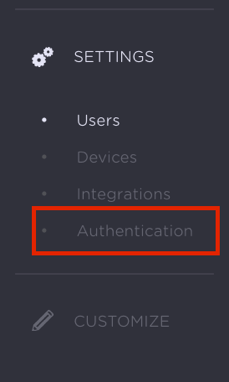
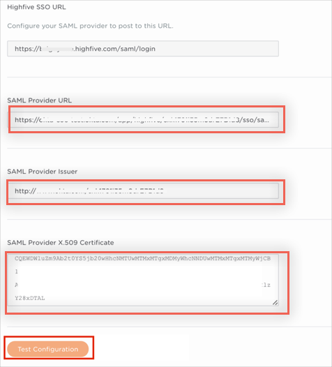
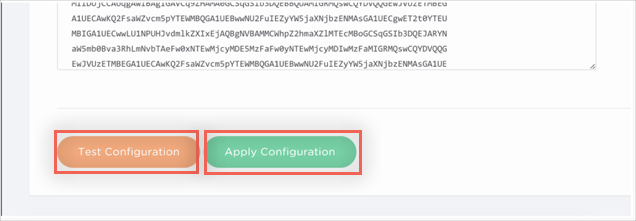

Log into your Domain Dashboard in Highfive.
Select Settings > Authentication:

Enter the following:
SAML Provider URL: Copy and paste the following:
Sign into the Okta Admin Dashboard to generate this variable.
SAML Provider Issuer: Copy and paste the following:
Sign into the Okta Admin Dashboard to generate this variable.
SAML Provider X.509 Certificate: Copy and paste the following (in PEM Text Format):
Sign into the Okta Admin Dashboard to generate this variable.
Click Test Configuration.
Note: Before testing, you need to assign yourself to the Highfive application in Okta, People section.
If everything is correct, you'll get see a success message.

Click Apply Configuration:
Note: This is an important step that saves your configuration.

Done!
Notes:
IdP-initiated flows, SP-initiated flows, and Just in Time (JIT) provisioning are all supported.